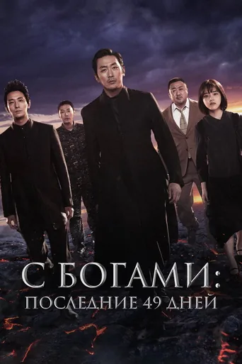

С Богами: Последние 49 дней 2018
Бывший мстительный призрак Ким Су-хон предстаёт перед королём Подземного мира, и ангел смерти Кан-ним просит для него прохождение обычной процедуры — он уверен, что сможет убедить судей в невиновности своего подопечного. Король соглашается, но ставит условия: в течение 49 дней ангелы должны вознести душу старика Хо, чьё земное время давно истекло, и доказать невиновность Су-хона. Душу защищает Домовой, который мало того, что регулярно выписывает тумаков пришедшим за ней, так ещё и проявился перед дедом и его малолетним внуком и помогает им по хозяйству. При ближайшем знакомстве с Домовым ангелы выясняют, что тот помнит подробности их жизней и связь друг с другом тысячелетней давности.
Открыть в каталогеДанные и постеры принадлежат их правообладателям. Этот продукт использует TMDB API, но не одобрен и не сертифицирован TMDB.